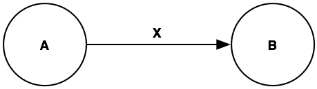

Table of Contents
QGraph is a visual query language designed to support knowledge discovery in large graph databases. Such databases are used to represent relational data, that is, data that explicitly represent both objects and the relationships among them.
QGraph has some important differences from standard relational database query languages such as SQL. Most obviously, QGraph is a visual query language. Queries are created by drawing the desired graph structure and adding restrictions in the form of conditions, constraints, and numeric annotations. QGraph includes a grouping and counting mechanism that lets users move beyond specifying an exact database structure in a query. Queries can contain generalized structural descriptions, enabling a single query to match a variety of database structures.
Unlike SQL, which returns individual records, QGraph queries return subgraphs, complex objects that correspond to connected sets of objects and relations in the queried database. These subgraphs retain the full details of the database objects and links rather than just providing aggregations such as count or average. Subgraphs give users access to both the content and structure of the matches when analyzing and exploring relational data.
QGraph is used in Proximity, an open-source system for relational knowledge discovery. Although QGraph is a full-fledged query and update language for graph databases, Proximity currently only implements a large subset (but not all) of QGraph functionality. This document focuses on the features of QGraph that have been implemented in Proximity. See the technical report A Visual Language for Querying and Updating Graphs [Blau, Immerman, and Jensen, 2002] for a full description of QGraph’s power, including functionality not yet available in the current Proximity implementation.[1]
QGraph is designed to work with graph databases such as those used by Proximity. Proximity databases are directed, attributed graphs where nodes correspond to objects (typically people, places, and things) and binary links represent the relationships among objects. Both objects and links can have zero or more attributes and all attributes are set valued. For example, in a database containing information about movies, an object representing an actor might have a name attribute that has multiple values for the actor’s given and stage names. Similarly, a link connecting an actor to a movie might have a role attribute that could contain multiple values when the actor plays multiple roles in a film.
QGraph queries return a collection of subgraphs from the database that match the structure specified in the query. In Proximity, this result set is called a container. A container’s subgraphs include the matching objects and links as well as all associated attributes for these elements.
To get a sense of QGraph’s power and flexibility, consider a graph database containing information on the movie industry. Such a database might represent movies, actors, directors, producers, studios, and awards as objects, with links representing the relationships among these entities. We might query such a database to identify simple subgraphs such as movies and their actors, or more complex subgraphs such as all the actors who have worked with a particular director, following links through the associated movies. The query in Figure 1.1 finds just such subgraphs.
![Example query [Intro_DB01_Q01.qg2.xml]](images/Intro_DB01_Q01.png)
Without explaining the query’s notation at this point, we observe
that this query finds directors connected to one or more
movies, which are in turn are connected to one or more actors. When the
query finds a match in the database, it returns the entire
matching subgraph.
Figure 1.2 shows the kind of subgraph that might get returned as a match for such a query. This subgraph shows the director Steven Spielberg and the links from him to the movies that he’s directed. Those movies are in turn linked to the actors that appeared in those movies. (Like other examples in this guide, data for this example is intended to be representative, but not necessarily complete.)

An important feature of this subgraph is that movies are linked to
different numbers of actors. We do not need to know, and the query
does not have to specify, how many actors are linked to each movie.
Similarly, we do not need to know how many movies Steven Spielberg has
directed. The matching subgraph for another director is likely to
include a different number of movies, and those movies are also likely
to be linked to varying numbers of actors. QGraph lets us create a
simple, easily understood query that matches varying graph
structures.
By returning complete subgraphs, QGraph provides results particularly well suited for use in relational knowledge discovery. Unlike query languages that require propositionalizing attribute data from related objects, QGraph preserves both the explicit relationships among objects and the specific attribute values for all objects and links in the subgraph. Simplistic approaches to propositionalizing relational data can result in bias due to hidden autocorrelation or degree disparity. By preserving the full relationship and attribute value data, QGraph facilitates the development of models that can detect and adjust for such sources of bias.
QGraph includes several mechanisms that together provide a powerful system for specifying the graph structures that match a QGraph query: These mechanisms are introduced in the following chapters:
-
Chapter 2, Query Basics describes the basic structure and results of a QGraph query
-
Chapter 3, Conditions introduces conditions, which place restrictions on the attribute values of matching objects and links.
-
Chapter 4, Numeric Annotations describes numeric annotations, a powerful and elegant counting feature that serves to limit and group query results.
-
Chapter 5, Constraints describes constraints, a global mechanism that relates one object or link to another.
-
Chapter 6, Subqueries describes subqueries, which enable the treatment of connected subgraphs as a logical unit in defining more complex queries.
-
Appendix B, XML Representation describes the Proximity XML representation for queries.
A QGraph query is a labeled graph designed to correspond to selected structures in the target database. The vertices in the query correspond to objects in the database and the edges in the query correspond to database links. This distinction in terminology is important and will be maintained throughout this guide—we use the terms object and link when referring to database entities, and the terms vertex and edge when referring to query elements.
Because QGraph is currently only implemented in Proximity, this Guide includes a discussion of how that implementation may affect the use and interpretation of QGraph queries and results. When applicable, each chapter includes a section that describes factors you should be aware of when using QGraph in Proximity, such as how query results are stored in the database, efficiency considerations, or implementation restrictions. Information presented in these sections is not part of the QGraph specification, but can be useful when understanding how QGraph works in Proximity.
An important characteristic of Proximity databases is the lack of an inherent sense of object or link types. Type information is stored as an attribute value, just like any other attribute. When we refer to an actor object or role link, we are using a convenient shorthand for “an object whose ‘type’ attribute has a value of ‘actor’ ” or “a link whose ‘kind-of’ attribute has a value of ‘role.’ ” Users are free to include or not include type information in a database’s object and link attributes and to use whatever name they chose for an attribute that stores type information. Descriptions in this document may refer to objects and links by type (e.g., an actor object or role link) or value (e.g., the Peter Sellers object) with the understanding that this is a shorthand for database objects and links containing attributes that represent this “type” information or that have the specified attribute value.
Databases, QGraph queries, and matches identified by executing those queries are all graphs. To help distinguish these items, the Guide follows the following graphic conventions:
Database fragments use shaded ovals to represent the objects in the database. Attributes are shown next to their corresponding object or link.
 |
Queries use white circles for vertices. Query vertices and edges are labeled.
|  |
Query results use shaded ovals to represent the objects in the resulting subgraphs. Subgraph objects and links are labeled with the corresponding query labels. Because QGraph queries return complete subgraphs that include all attribute values for the component objects and links, we also show attribute values in our graphical representations of subgraphs.
 |
The QGraph Guide is primarily intended for readers with little to no experience using QGraph. The major chapters are heavily oriented around a series of examples, making the Guide a relatively quick read. More experienced users may want to take advantage of the summary at the end of each chapter or return to the Guide to improve their understanding of specific issues.
Most of the examples
in the QGraph Guide,
including both database fragments and queries, are available in the
$PROX_HOME/doc/user/qgraph/examples directory. When such files are
available, the figure caption includes the appropriate file name.
See the Proximity Tutorial
for complete instructions
for importing databases and running queries.
[1] How QGraph evaluates conditions and constraints on attributes with multiple values has changed since the publication of this technical report. On this issue, the Proximity QGraph Guide is definitive.